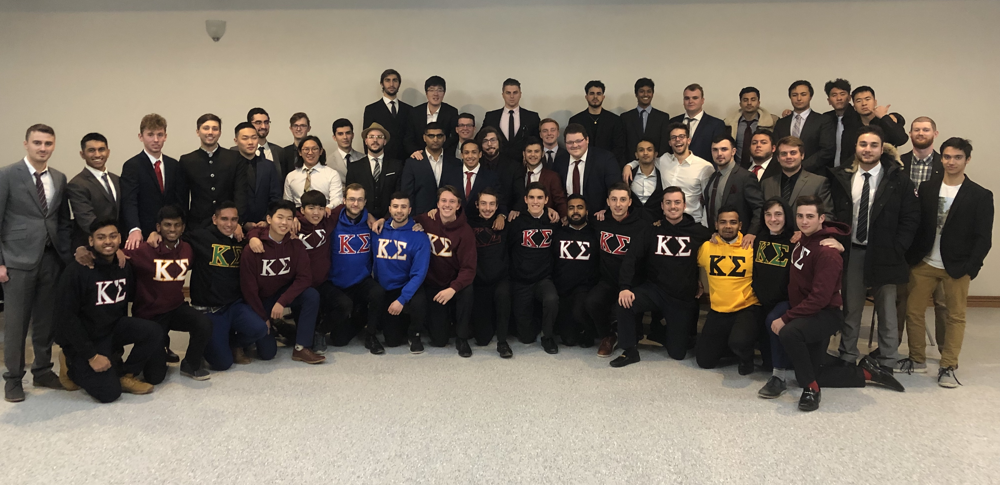

What is Rush?
Recruitment for Kappa Sigma is 365 at Western University. However, Rush is a period that runs one to two weeks in September and then again in January in which fraternities at Western conduct their annual or semi-annual new member recruitment. Such weeks are filled with social functions with Sorority organizations, social gathering with brothers, and a Formal invite only event. Kappa Sigma runs a Fall and Winter Rush, allowing for two cohorts of new potential brothers each year.
Official Rush Events
Once you've been extended a Bid, you're not in the fraternity yet. What lies ahead is a phase called pledging. You can read all about pledging on our Pledging Information page. The Kappa Sigma Pledging Process Ready to begin your journey on the way to becoming a member of Kappa Sigma? Fill out our nomination form. Rush Application Form Rush at Western University is a rewarding and exciting experience for both the chapter members and the potential new members participating in the process. Rush Week is designed so that undergraduate men have the opportunity to discover what Greek Life has to offer. Each year, we are thrilled to meet the men who are interested in joining our brotherhood and becoming a part of the great Greek community we have here at Western University, but most importantly, becoming a part of the most preferred Fraternity internationally, Kappa Sigma!

Formal Rush
Formal Rush occurs on the final evening of our rush. It differs from the other official Rush events in that it is invite-only and has a formal dress code, in addition to being typically held at various locations throughout Western. In the past, Kappa Sigma has held Formal Rush at Alumni's private venues, and other exclusive locations. In order to be extended a Formal Rush invitation, a prospective new member (also called a Rushee) must impress upon a fraternity that he is worthy of the gesture. If you are unsure if you have been extended a Formal Rush invitation, ask. In all likelihood, however, you will know when you are invited. Typically, Rushees arrive at the Fraternity house and are provided transportation to and from the Formal Rush event that they are attending. If you do choose to accept two Formal Rush invitations that are on the same day, transportation will be provided between the two events. Kappa Sigma strongly recommends attending its Formal Rush after that of another fraternity.
Bids Day
When the rush process is over, the members of the different fraternity and sorority chapters will meet and decide whether not they want to extend a bid, or invitation, to students who they think will pledge their organization. Those who successfully receive a bid will know the following day after the Formal Rush event, as Kappa Sigma's Rush Chair(s) will contact you with further instruction. Once a student accepts a bid to a certain organization, the pledging process begins. This can range from a couple of weeks to an entire semester, In our Chapter it is a 7-8 week process. During this time our pledges get to build strong relationships with the members of our Chapter, as well as those joining with them, and Kappa Sigma's traditions, values, history, etc. At the end of the pledge period, the new members are officially initiated into the chapter and enjoys all the benefits of being a Brother of Xi-Nu Chapter, and a Kappa Sigma initiate.

Ready to begin your journey on the way to becoming a member of Kappa Sigma? Fill out our nomination form.
Rush Application